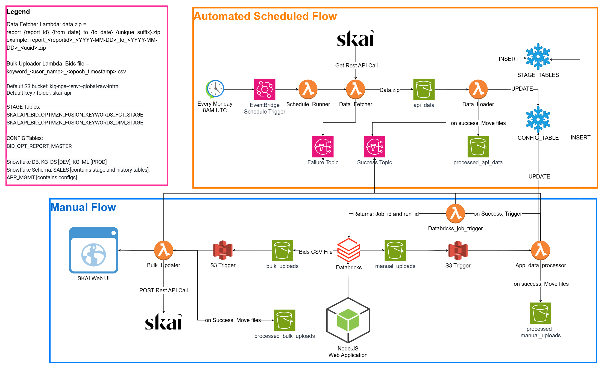

Maximize efficiency in Retail Media Paid Search
Built a modular retail media optimization platform that converts weekly performance data into keyword-level bid actions aligned to campaign ROAS goals.
Overview
Architected an end-to-end event-driven serverless ELT pipeline on AWS for a Retail Media Bid Optimization platform supporting Kellanova's Europe business, integrating SKAI Marketing APIs with Snowflake and Databricks. Automated bulk file uploads and bid updates via Python Lambdas and Databricks ML regression models to eliminate manual intervention and surface optimal keyword bids, with all components provisioned through CloudFormation and deployed via OIDC-based GitHub Actions CI/CD across dev, QA, and prod.
Description
The business needed a reliable way to manage bids across retailers while keeping spend aligned to campaign-level ROAS targets. Existing workflows relied on delayed exports, fragmented analysis, and manual bid updates, making it difficult for media managers to react within the same optimization week.
- No unified process to move from keyword performance data to production-ready bid actions.
- Manual uploads for non-API retailers lacked governance, validation, and repeatable audit trails.
- Teams needed a controlled weekly cadence to review strategy before pushes were executed in platform.
Key Challenges
- Maintaining a strict Brand > Campaign > Keyword hierarchy with a stable Campaign Name + Keyword unique key.
- Combining automated API bidding (SKAI) and manual retailer uploads in one operational model.
- Handling asynchronous SKAI report generation, polling, retries, and downstream load dependencies.
- Ensuring bid guardrails (min/max bid, baseline lift, min increase/decrease) were consistently enforced.
- Providing transparent model outputs, run history, and downloadable audit evidence for stakeholders.
Solution Highlights
- Implemented an event-driven AWS Lambda pipeline to fetch SKAI performance data, process files, and load Snowflake staging tables.
- Built a weekly operating cadence: Sunday data ingestion, Monday-Tuesday strategy updates, Wednesday automated bid execution.
- Integrated campaign-level ROAS configuration with keyword-level recommendation logic, including bid floor/ceiling and uplift guardrails.
- Enabled manual retailer workflows using standardized CSV templates with validation and transformation before optimization runs.
- Orchestrated downstream Databricks job triggering and notifications for end-to-end visibility across data, model, and activation stages.
Results & Impact
- Established a dependable closed-loop optimization process from ingest to bid push, reducing operational handoffs.
- Improved bid governance through consistent use of ROAS targets and campaign-level constraints.
- Accelerated decisioning by giving teams a weekly strategic review window before automated execution.
- Created full historical traceability of runs, bid deltas, and constraint triggers for audit and performance retrospectives.
- Enabled scale across both API-enabled and non-API retailers through one extensible architecture.
Tech Stack
- AWS Lambda, S3, EventBridge, SNS, CloudWatch, Secrets Manager
- Python 3.12 (requests, pandas, snowflake-connector)
- SKAI API v1 (OAuth2, async reports, bulk updates)
- Snowflake staging and control-table orchestration
- Databricks Jobs API for downstream model execution
- GitHub Actions CI/CD with OIDC-based deployment flow
Architecture
